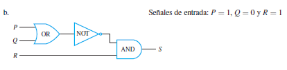
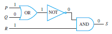
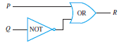
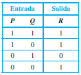

Ejemplos
Determinación de salida para una entrada dada
1. Indique la salida del circuito que se muestra a continuación.
Solución:
Muévase de izquierda a derecha a través del diagrama, siga la acción de cada puerta en las señales de entrada. La puerta NOT cambia de P = 0 a 1, por lo que ambas entradas a la puerta AND son 1, por lo que la salida de R es 1. Esto se muestra indicado en el diagrama, como se muestra a continuación.
2. Indique la salida del circuito que se muestra a continuación.

Solución:
La salida de la puerta OR es 1 ya que una de las señales de entrada, P, es 1. La puerta NOT cambia este 1 en un 0, por lo que las dos entradas a la puerta AND son 0 y R = 1. Por lo tanto la salida de S es 0. A continuación se muestra el seguimiento.

Para construir la tabla completa de entrada/salida de un circuito, siga el circuito para encontrar las señales de salida correspondientes a cada posible combinación de señales de entrada.
3. Construya la tabla de entrada/salida del siguiente circuito.

Solución:
Enliste las cuatro combinaciones posibles de las señales de entrada y encuentre la salida para cada una siguiendo el circuito.

4.Encuentre la expresión booleana que corresponde al circuito que se muestra a continuación. Un punto indica una soldadura de dos alambres, cables que se cruzan sin un punto se supone que no se tocan.
Solución:
De seguimiento a través del circuito de izquierda a derecha, indicando la salida de cada puerta simbólicamente, como se muestra a continuación.
La expresión final obtenida (P v Q) ^ 7(P ^ Q), es la expresión para o exclusivo: P o Q, pero no ambos.
5. Encuentre la expresión booleana que corresponde al circuito que se muestra a continuación.
La expresión booleana correspondiente al circuito es (P ^ Q) ^ 7 R, como se muestra a continuación.

6. Construya el circuito para la siguiente expresión booleana. (7P ^ Q) v 7Q
Solución:
Escriba las variables de entrada en una columna en el lado izquierdo del diagrama. Después en el lado derecho del diagrama a la izquierda, trabaje de la parte más externa hacia la más interna. Ya que la última operación ejecutada cuando se evaluó (7P ^ Q) ^ 7Q es v, ponga una puerta OR en el extremo derecho del diagrama. Una entrada de esta puerta es 7P ^ Q, por lo que dibuje una puerta AND a la izquierda de la puerta OR y muestre su salida entrando en la puerta OR. Puesto que una entrada a la puerta AND es 7P, dibuje una línea de P a una puerta NOT y de ahí a la puerta AND. Ya que la otra entrada a la puerta AND es Q, dibuje una línea de Q directamente a la puerta AND. La otra entrada a la puerta OR e 7Q, por lo que dibuje una línea de Q a la puerta NOT y de la puerta NOT a la puerta OR. Se obtiene el circuito que se muestra a continuación.
7. Construya el circuito para la siguiente expresión booleana. b. ((P ^ Q) ^ (R ^ S)) ^ T
Solución:
Para iniciar la construcción de este circuito, ponga una puerta AND en el extremo derecho para la ^ entre ((P ^ Q) ^ (R ^ S)) y T. A la izquierda de donde puso la puerta AND corresponde al ^ entre P ^ Q y R ^ S. A la izquierda de donde puso la puerta AND corresponde a los ^ entre P y Q y entre R y S. En la figura 2.4.4 se muestra el circuito.
8. Diseñe un circuito para la siguiente tabla de entrada/salida:
Solución:
Primero construya una expresión booleana con esta tabla como su tabla de verdad. Para hacer esto identifique cada renglón para el que la salida es 1 —en este caso el primero, tercero y cuarto renglones. Para cada uno de estos renglones construya una expresión que produzca un 1 (o verdadero) para la combinación exacta de valores de entrada para ese renglón y un 0 (o falso) para todas las otras combinaciones de los valores de entrada. Por ejemplo, la expresión para el primer renglón es P ^ Q ^ R porque P ^ Q ^ R es 1 sí P = 1 y Q = 1 y R = 1 y es 0 para todos los demás valores de P, Q y R. La expresión del tercer renglón es P ^ 7 Q ^ R ya que P ^ 7 Q ^ R es 1 si P = 1 y Q = 0 y R = 1 y es 0 para todos los demás valores de P, Q y R. Del mismo modo la expresión del cuarto renglón es P ^ 7Q ^ 7R.
Ahora, cualquier expresión booleana con la tabla dada como su tabla de verdad tiene el valor 1 en el caso P ^ Q ^ R = 1, o en caso de P ^ 7Q ^ R = 1, o en caso P ^ 7Q ^ 7R = 1 y en ningún otro caso. De lo que se deduce que una expresión booleana con la tabla de verdad dada es:
(P ^ Q ^ R) V (P ^ 7Q ^ R) V (P ^ 7Q ^ 7R).
9. Demuestre que dos circuitos son equivalentes

Las expresiones booleanas que corresponden a los circuitos a) y b) son ((P ∧ 7Q) ∨ (P ∧ Q)) ∨ Q y P ∧ Q, respectivamente.